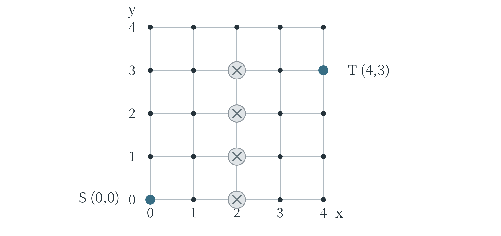
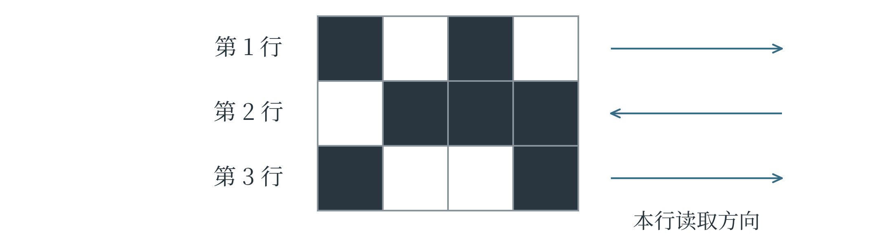

E 入门级 J 第一轮模拟题
本卷为原创模拟题。限时 90 分钟，满分 100 分。单选题每题只有一个正确选项；多选题每题有两个或两个以上正确选项，全部选对得 5 分，少选、多选或错选均不得分；判断题正确记“√”，错误记“×”。所有代码均按 Python 3 理解。答案与解析见附录 G。
一 单选题
共 10 题，每题 5 分，共 50 分。
1． 一个故障诊断系统把专家经验写成“若指示灯不亮且电源插头未接好，则先检查供电”等规则，再依据已知事实逐条推理。这种设计最直接体现了人工智能的哪种研究思路（ ）？
A．用神经元之间的连接学习规律的联结主义
B．用符号和规则表达知识并推理的符号主义
C．通过与环境交互形成行为的行为主义
D．只要规则数量足够多，就已经实现通用人工智能
2． 下面四个事件按发生时间从早到晚排列，正确的是（ ）。
① 图灵提出后来被称为“图灵测试”的设想
② Deep Blue 在国际象棋对抗赛中战胜卡斯帕罗夫
③ 达特茅斯会议召开
④ AlphaGo 在围棋对抗赛中战胜李世石
A．①③②④
B．③①④②
C．①②③④
D．③②①④
3． 一个校园声音资料库保存了两类文件：一类是按“编号、地点、时长”三列填写的表格；另一类是对应的录音文件。下列说法最准确的是（ ）。
A．录音能在电脑中保存，说明录音内容与三列表格具有完全相同的结构
B．表格里有地点名称，所以整张表一定属于模拟数据
C．只要把录音文件改成表格文件的扩展名，就能得到结构化记录
D．这张表是结构化数据；录音内容通常作为非结构化数据处理，两者都可以用数字形式存储
4． 一台电脑有 8 GB 内存和剩余空间充足的 1 TB 硬盘。程序试图一次把远大于 8 GB 的数据读入内存，出现内存不足。下列解释与处理思路最合理的是（ ）。
A．硬盘剩余空间大于数据大小，程序就不可能遇到内存不足
B．把所有文件改成较短的名字，就能显著减少已加载数据占用的内存
C．硬盘空间与运行时内存不是同一资源，可以考虑分批读取和处理数据
D．连接分辨率更高的显示器，可以为程序提供更多运行内存
5． 某作文辅助系统经常把同一种方言表达标成“病句”。检查发现，训练材料几乎没有这种方言的使用实例。下列分析最合理的是（ ）。
A．材料覆盖不足可能影响系统对该表达的判断，应结合具体语境和更多相关材料检查
B．系统输出了相同判断，便能证明这些表达在任何语境下都错误
C．把系统界面改为“专业版”，即可纠正它对语言的判断
D．这说明一切语言模型都不可能在任何任务中提供帮助
6． 运行下面的代码，输出结果是（ ）。
print(int("101", 2) + int("A", 16))
A．111
B．20
C．16
D．15
7． 运行下面的递归程序，输出结果是（ ）。
def f(n):
if n <= 1:
return 2
return f(n - 2) + n
print(f(5))
A．8
B．10
C．12
D．15
8． 运行下面的程序，输出结果是（ ）。
grid = [[2, 5], [7, 1]]
grid[0][1] = grid[1][0] - grid[0][0]
print(grid[0][1] + grid[1][1])
A．5
B．8
C．6
D．12
9． 小车只能沿下图中的线段，每步走到一个横向或纵向相邻的格点，每步 1 米，不能离开图示范围。灰色叉号处是不能进入的格点。小车从 \(S=(0,0)\) 到 \(T=(4,3)\)，最少需要走的步数、S 与 T 的直线距离依次为（ ）。

A．9 步，5 米
B．7 步，5 米
C．9 步，7 米
D．8 步，5 米
10． 下图中的黑格记为 1，白格记为 0。编码时，第 1 行从左向右读，第 2 行从右向左读，第 3 行再从左向右读。每行读出的四位二进制数，最高位始终是最先读到的一位。三行分别转为十进制后，结果依次是（ ）。

A．10，7，9
B．5，14，9
C．10，14，6
D．10，14，9
二 多选题
共 6 题，每题 5 分，共 30 分。全部选对得分。
11． 一个声音识别系统通过麦克风采集声音，把当前录音临时放入内存，使用已加载的模型进行计算，再通过扬声器播报识别结果。下列说法正确的有（ ）。
A．麦克风在这个过程中承担输入设备的作用
B．扬声器承担输出设备的作用
C．内存中的数据在断电后一定仍能永久保存，不需要另存文件
D．模型计算、数据存取和结果播放是不同环节，不能把全部工作都等同于“算力”
E．只更换存放录音的硬盘，不能保证模型的识别正确率就会提高
12． 博物馆用生成式 AI 修补一张有缺损的老照片。模型补出了照片边缘一块原本无法辨认的招牌，文字清晰，但工作人员尚未找到历史记录加以确认。下列处理合理的有（ ）。
A．把修补结果视为一种可能的重建，并继续寻找材料核实招牌内容
B．因为招牌文字清晰，所以可以直接把它作为当年商店名称的证据
C．展出时区分原始照片中可见的部分与模型推测补出的部分
D．把图片改成黑白，就足以证明补出的内容符合历史事实
13． 学校公布了一份活动通知。编辑希望 AI 只依据这份通知，整理“活动名称、时间、报名方式”，通知没有写明的项目标为“未说明”。下列做法或判断合理的有（ ）。
A．把通知原文附在请求中，并明确限定依据的材料范围
B．只要要求回答不超过 100 字，就能保证模型不补写通知中没有的信息
C．明确给出需要整理的三个字段和缺失信息的处理方式
D．得到结果后，仍应逐项与原通知核对
E．只需加上“你是一位专家”，就可以确保模型不再产生任何错误
14． 运行下面的代码。下列说法正确的有（ ）。
def adjust(values):
values[0] = values[0] + 1
return values[0] + values[-1]
nums = [2, 4, 6]
result = adjust(nums)
A．result 的值为 9
B．函数调用结束后，nums 仍为 [2, 4, 6]
C．values 是参数名；本次调用中，它与 nums 指向同一个列表
D．执行 return 后，本次函数调用结束，并把计算结果交回调用处
E．再调用一次 adjust(nums)，nums[0] 的值仍为 3
15． 七天中每天借出的某类图书册数分别为 1、2、2、3、4、5、18。下列说法正确的有（ ）。
A．平均每天借出 5 册
B．中位数为 4
C．众数为 2
D．18 比其他数大得多，因此无需调查就应该把它认定为录入错误
E．若只计算其余六天，平均数会小于包含 18 时的平均数
16． 三盏灯编号为 1、2、3，最初都熄灭。按一次按钮会使指定灯的状态翻转：亮变灭，灭变亮。按钮 A 翻转灯 1、2；按钮 B 翻转灯 2、3；按钮 C 翻转灯 1、3。先按 A，再按 B。下列说法正确的有（ ）。
A．此时灯 1 和灯 3 亮，灯 2 灭
B．在此基础上再按一次 C，三盏灯全部熄灭
C．如果最初改成先按 B、再按 A，最终状态与先按 A、再按 B 相同
D．从全灭状态开始，A、B、C 各按一次，三盏灯会全部点亮
E．从任意灯光状态开始，连续按同一个按钮两次，都会恢复到按这两次之前的状态
三 判断题
共 10 题，每题 2 分，共 20 分。
17． 所有人工智能系统都必须先用带标签的数据训练；没有经过这种训练的规则推理系统不可能属于人工智能。（ ）
18． 一个系统能在围棋任务中战胜高水平棋手，并不能仅凭这一表现认定它已经具备人类在所有领域的智能。（ ）
19． AI 生成的书目即使列出了看似合理的书名、作者和出版年份，也可能没有对应的真实图书。（ ）
20． 一个系统同时分析说话声音和嘴唇运动图像来识别说话内容，属于利用多模态数据的应用。（ ）
21． 运行下面的代码后，只有第一行的第二个元素变为 8，rows[2][1] 仍为 0。（ ）
rows = [[0] * 2] * 3
rows[0][1] = 8
22． Python 表达式 bin(12) 的返回值恰好是字符串 "1100"，不包含其他字符。（ ）
23． 下面的函数调用返回 2，因为 return count 在 for 循环结束后才执行。（ ）
def count_long(words):
count = 0
for word in words:
if len(word) >= 3:
count = count + 1
return count
count_long(["AI", "data", "map"])
24． 在平面直角坐标系中，点 \((-2,3)\) 与点 \((4,3)\) 的直线距离为 6 个单位。（ ）
25． 已知所有审核通过的文章都已经登记。某篇文章已经登记，由此就能确定它已经审核通过。（ ）
26． 用“身高、体重、年龄”三个数表示每个样本时，每个样本可表示为一个三维特征向量；样本从 10 个增加到 100 个，并不会单凭数量增加就把每个向量变成一百维。（ ）